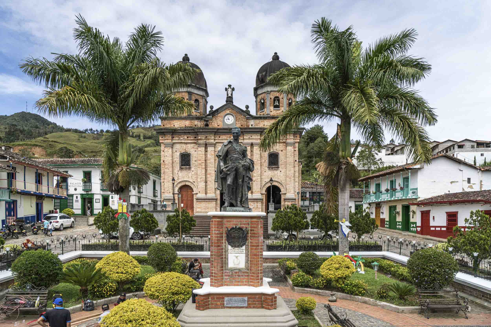
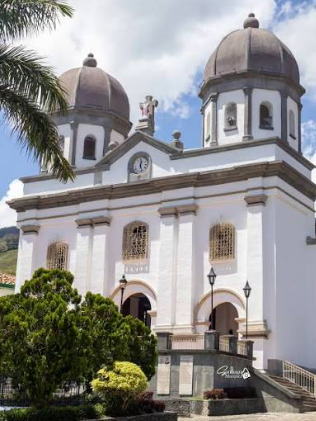
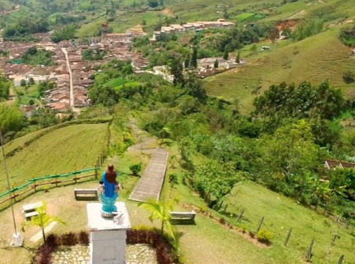
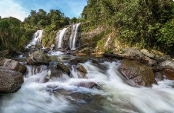
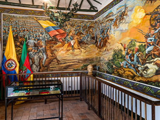
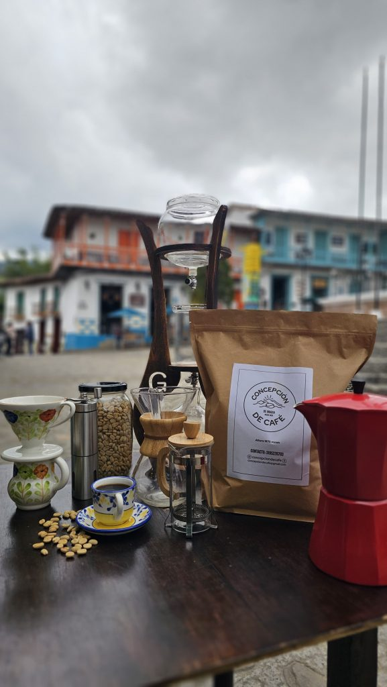

Bienvenido al portal
Encontraras información desde precios de algunos hoteles para tu presupuesto y lugares de interes turistico.
Descubre el encanto de Concepción, un pueblo lleno de historia, naturaleza y cultura en el departamento de Antioquia.
Planea tu visita!!Encontraras información desde precios de algunos hoteles para tu presupuesto y lugares de interes turistico.

Parque José María Córdova, en honor al prócer de la independencia nacido en este municipio.
Ver más
La Iglesia de Nuestra Señora de la Inmaculada Concepción, está ubicada en el parque principal del municipio de Concepción.
Ver más


Centro cultural del municipio de Concepción, dedicado a la promoción y conservación del patrimonio local.
Ver más
Un lugar acogedor para disfrutar de un buen café senbrado y cosechado por tierras y personas del campo en concepcion.
Ver más